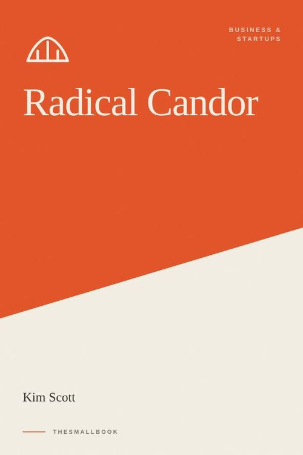

Library › Ask the Library › How do I handle criticism?
How do I handle criticism?
The short answer
Sort criticism into two buckets: information and noise. Information, even harsh, is a gift that shows you a blind spot. Noise is the critic's problem, not your data. Ask one question to every critic: 'What would you do differently?' The useful ones will tell you; the rest will silence themselves.
The books behind the answer

Radical Candor
Kim Scott · 2017 · 8 min · 6 lessons
Care personally + challenge directly. Anything less is ruinous empathy, obnoxious aggression, or manipulative insincerity.
- Care Personally, Challenge Directly: Feedback is a relationship act, the care makes the challenge bearable.

Ego Is the Enemy
Ryan Holiday · 2016 · 8 min · 6 lessons
At every career stage - aspiring, succeeding, failing - ego is the invisible saboteur. Humility, purpose, and the work are the antidotes.
- The Dangerous Ego: When ego defends, learning stops. Separate your identity from your work.

Thinking in Bets
Annie Duke · 2018 · 8 min · 6 lessons
Every decision is a bet. Stop judging decisions by outcomes - judge them by the quality of the process.
- Separate Outcome From Decision: Criticism of results is not criticism of judgment, grade the process, not just the score.
Questions people ask next
Can I read this in Hindi?
Yes. This answer is written in simple English. Open any linked book and choose Hindi or Hinglish to read the full lessons in your language, with audio where available.